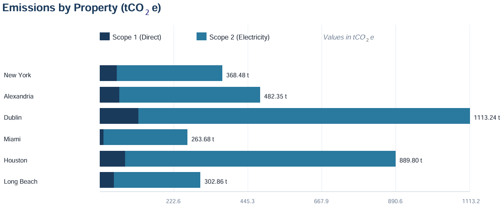
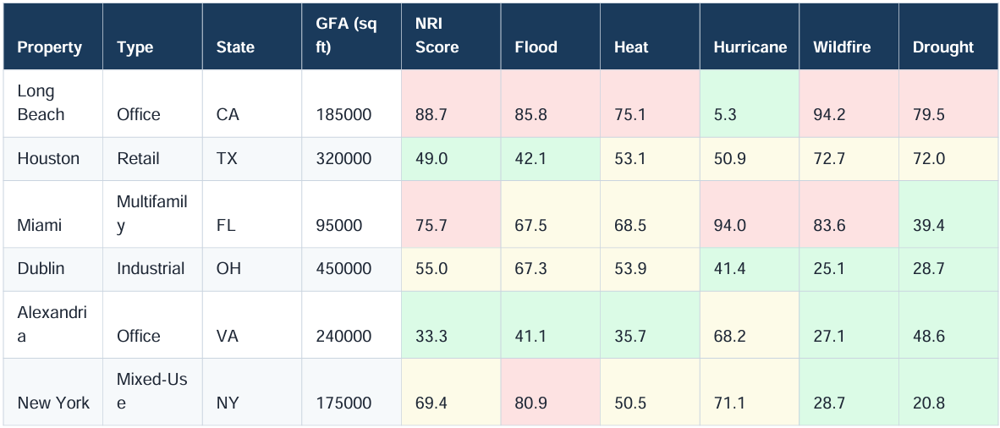
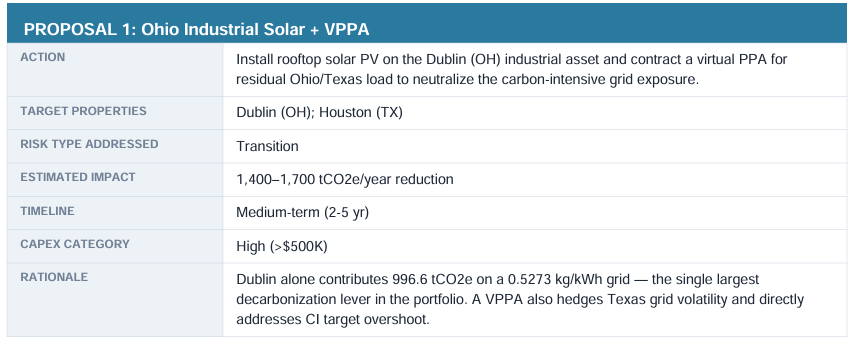

SkewRisk builds AI agents that measure greenhouse gas emissions and physical climate risk — wildfire, flood, heat — property by property, then recommend what to do about both.
Most assets sit in the body. The exposure hides in the tail.
You hand SkewRisk your portfolio data. A pipeline of specialized AI agents cleans it, measures it, and tells you where the risk actually lives.
Before anything is calculated, a data agent flags what it doesn't trust — missing units, anomalies, undocumented assumptions. A confident wrong number is worse than no number.
Scope 1 and 2 emissions computed with localized grid factors, by property, with every assumption documented for disclosure and third-party verification.
Property-level wildfire, flood, and heat exposure from public hazard data — ranked across the portfolio to surface the assets quietly carrying the most risk.
An agentic pipeline, not an LLM bolted onto a dashboard. Each step hands clean, checked work to the next.
Upload property data in whatever shape it arrives — utility figures, addresses, fuel use.
The validation agent resolves gaps and flags what needs a human eye.
Emissions and address-level climate risk scored against authoritative public data.
A structured, citable report — emissions, tail-risk ranking, and recommended actions.
Something you can hand to a board, an auditor, or an investment committee.



Real estate & REIT portfolios facing emissions disclosure and rising physical risk across many properties.
Sustainability & ESG teams who need forward-looking numbers, not just last year's report.
Asset & risk managers who need to know which holdings carry concentrated climate exposure.
Teams preparing for disclosure under frameworks like SB‑253, TCFD, and similar regimes.
SkewRisk is built by Vahid Shabro, PhD — a product leader with fifteen years across energy, emissions, and climate. He built ComboCarbon at ComboCurve from inception, led GHG and climate-risk strategy at bp, and has spent his recent work hands-on in agentic AI.
The conviction behind SkewRisk is simple: in emissions and risk work, the calculation was never the hard part. The hard part is knowing when the data is wrong, and turning that judgment into something a team can trust at scale. That's what the agents are for.
Walk through a sample analysis, or talk through whether SkewRisk fits your data.
vahid@skewrisk.com